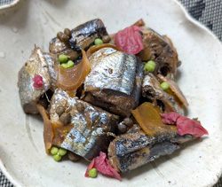

サンマの梅煮
- 調理時間：50分
- （一人当たり）
- カロリー：400kcal
- たんぱく質：24.1g
- 脂質：30.8g
- 炭水化物：2.1g
- 塩分：2.5g


＜4人分＞ ※作りやすい分量
- サンマ
- 4尾
- みりん
- 大さじ2
- ・水
- 600ml
- ・食塩
- 大さじ2
- ・水
- 600ml
- ・酢
- 大さじ1
- ・食塩
- 大さじ1/2
下準備の塩水
A
B
- ・生姜
- 1片
- ・実山椒
- 小さじ2
- ・梅干し
- 1～2個
- ・水
- 50ml
- ・酢
- 50ml
- ・醤油
- 150ml
- ・料理酒
- 150ml


- サンマを５～６等分に切り、下準備の塩水に5分浸す。
身が締まったら、内臓を取り出し、きれいに洗う。 - 鍋にAとサンマを入れ、5分火にかけて茹でたら、ザルに取り出す。
- 骨抜きで中骨を抜く。
- 別の鍋に③のサンマを並べて、Bの煮汁を入れ、落し蓋をして30分中火で煮る。
仕上げにみりんを加えて火を止める。
サンマの梅煮
秋の味覚といわれるサンマ。唯一、すべて「天然もの」で「国産」というめずらしい魚です。近年は不漁が続いていましたが今年は、例年より身が大きく脂がのっているという嬉しいニュースも。さらに先日、水産大手のマルハニチロが事業的規模でのサンマの試験養殖に成功したと発表され、期待が高まります。栄養満点の脂ごと、ありがたくいただきたいものです。